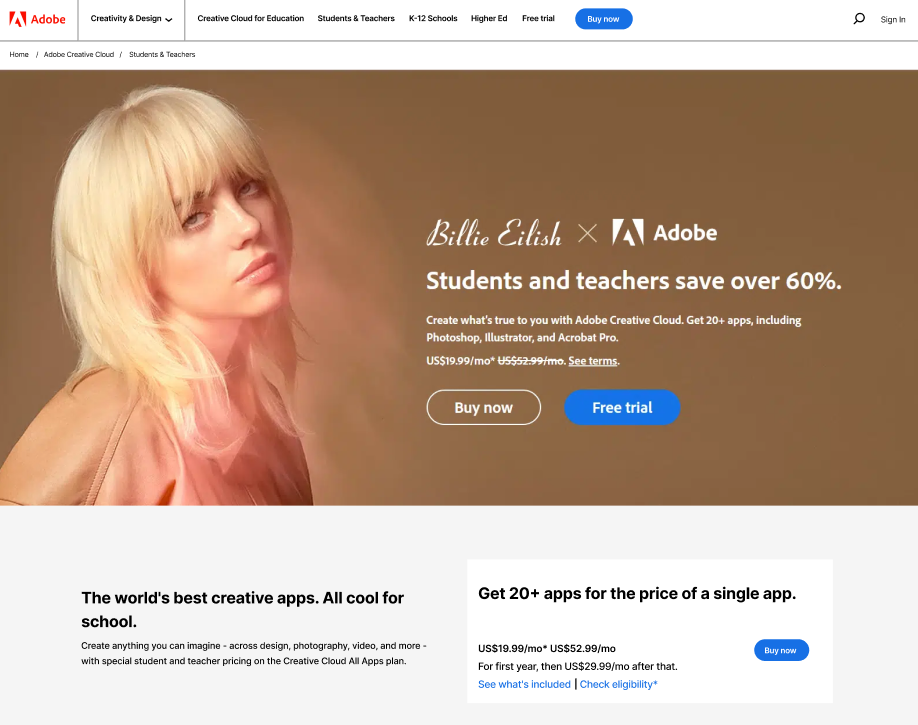

Temas principales
.
¿Qué es el Diseño Web y una Página Web?
El diseño web es la planificación y creación de páginas en internet, combinando aspectos visuales con funcionalidad y un objetivo. Una página web es un documento digital que se accede desde un navegador y forma parte de un sitio web.
Conceptos básicos
El Hipertexto es texto que contiene enlaces (hipervínculos) hacia otros documentos o páginas. Es la base de la navegación en internet. El UX o Experiencia de Usuario es cómo se siente una persona al usar una página o aplicación. Una buena UX busca que el sitio sea fácil de usar, rápido y agradable. El Prototipado es la creación de modelos o bocetos interactivos de una página antes de programarla. Permite visualizar el diseño, probar ideas y detectar errores a tiempo.

.
Shortcuts de Apple

.
¿Qué es un Diagrama de DOM / Flujo?
DOM (Document Object Model): Es la representación en forma de árbol de todos los elementos de una página (títulos, párrafos, botones). Diagrama de flujo: esquema visual que muestra los pasos o caminos que sigue un usuario al navegar en un sitio. El DOM es técnico y lo usa el navegador/programador y el diagrama de flujo es visual y lo usan diseñadores y equipos para planear la experiencia del usuario.
Trabajos de clase
Página
.
Portada de revista

.
Diagrama

.
¿Cómo puede ayudarte la IA si algo se te dificulta?
La inteligencia artificial puede ser una herramienta de gran apoyo para quienes no dominan la animación, por ejemplo. Permite generar ideas, storyboards y prototipos animados de manera rápida a partir de descripciones en texto o imágenes. Adobe Animate + Firefly: Adobe está integrando IA para simplificar la creación de movimientos y transiciones.
Runway Gen-2: Puede genera clips de video animados a partir de texto o imágenes. Útil para motion graphics rápidos. Pika Labs: Animación de ilustraciones estáticas. Puedes subir un dibujo y darle movimiento. Kaiber AI: Convierte imágenes o ilustraciones en secuencias animadas estilo video musical o loop. DeepMotion: Convierte un video simple (por ejemplo, alguien caminando) en un personaje animado 3D o 2D.
Así como plataformas más sencillas como Canva o Animaker que facilitan la creación de animaciones sin necesidad de conocimientos técnicos. De esta forma, la IA se convierte en un asistente que agiliza procesos, corrige errores y abre posibilidades creativas, especialmente para quienes están aprendiendo o no se especializan en animación. La diferencia principal entre la animación tradicional y la asistida por IA es que en la primera el diseñador controla cuadro por cuadro, mientras que en la segunda la IA se encarga del trabajo técnico y repetitivo, permitiendo que el creativo se enfoque más en la idea y la narrativa. Esto significa que la IA no sustituye al animador, sino que funciona como una extensión de sus herramientas, abriendo posibilidades para quienes están aprendiendo o no dominan la parte técnica de la animación.
.